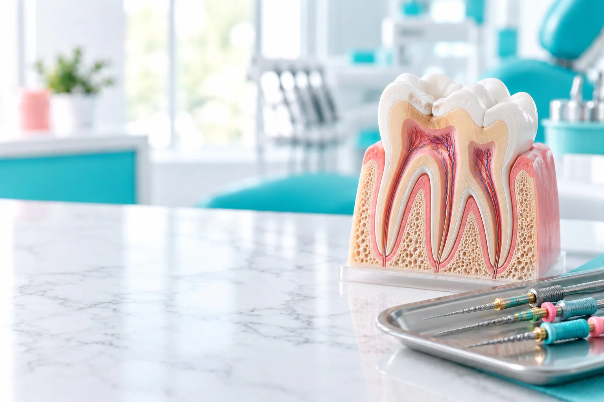
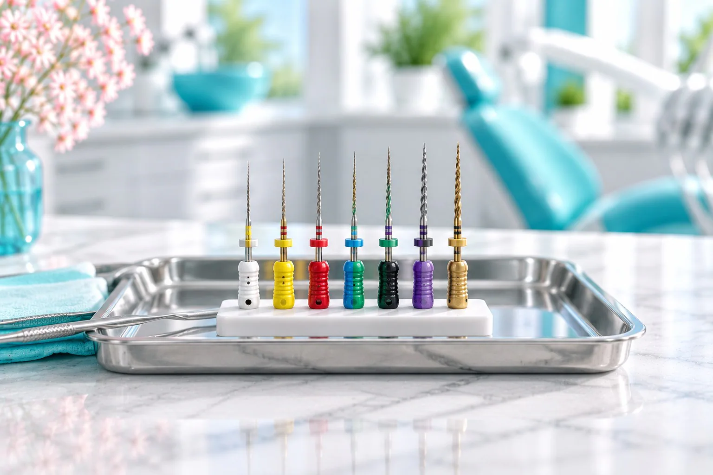
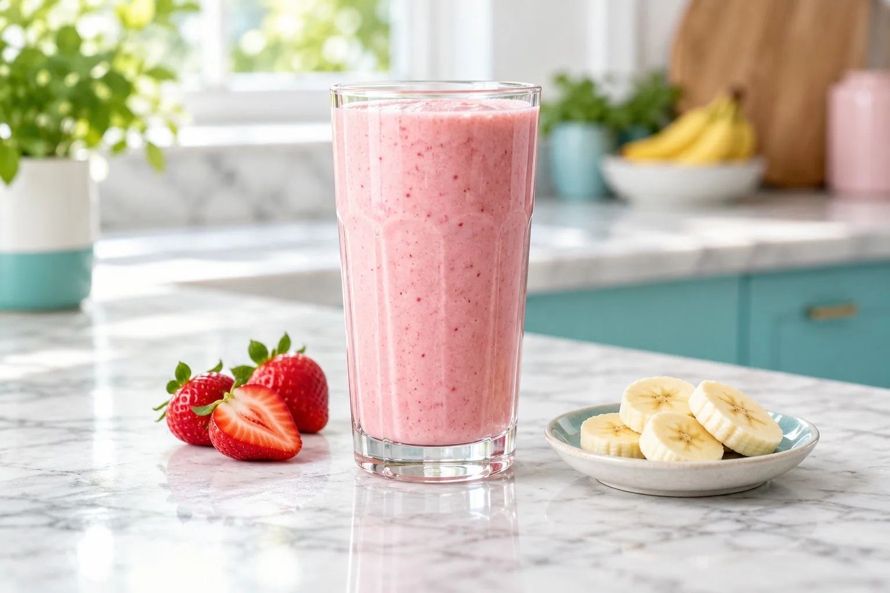

Воспаление нерва
Нерв зуба воспалился: лечение пульпита.

Лечение каналов зуба в стоматологии «Вайтис» в Одинцово: одноканальный зуб от 5 800 ₽ (без пломбы).
Чистим и пломбируем корневые каналы, перелечиваем ранее леченные, в сложных случаях работаем с микроскопом. Ведёт терапевт, снимок делаем в клинике. Клиника на ул. Северная, 5 к4 (ЖК «Одинбург»), приём ежедневно с 9:00 до 21:00.
Имеются противопоказания. Необходима консультация специалиста.
Эндодонтия: лечение корневых каналов. Стоимость зависит от числа каналов, их формы и от того, лечили ли зуб раньше. Точную сумму врач назовёт после снимка.
Скидка 5% многодетным семьям и пенсионерам. Лечение можно оплатить частями, условия подскажет администратор. Выдаём документы для налогового вычета 13%.
Имеются противопоказания. Необходима консультация специалиста.
Эндодонтия: лечение корневых каналов. Стоимость зависит от числа каналов, их формы и от того, лечили ли зуб раньше. Точную сумму врач назовёт после снимка.
| Услуга | Когда нужна | Цена |
|---|---|---|
| Лечение 1-канального зуба с пломбированием каналов в 1 посещение (без пломбы) | удаление нерва, чистка и пломбирование канала | от 5 800 ₽ |
| Лечение под микроскопом | по показаниям, к стоимости лечения | 3 000 ₽ |
| Инфильтрационная анестезия | местное обезболивание | 700 ₽ |
| Прицельный снимок | снимок одного зуба | 500 ₽ |
| КТ двух челюстей | если каналы сложные | 3 800 ₽ |
Скидка 5% многодетным семьям и пенсионерам. Лечение можно оплатить частями, условия подскажет администратор. Выдаём документы для налогового вычета 13%.
Имеются противопоказания. Необходима консультация специалиста.
Лечение корневых каналов нужно, когда воспаление дошло до нерва или до тканей у корня.
Нерв зуба воспалился: лечение пульпита.
Очаг у верхушки корня: лечение периодонтита.
Каналы запломбированы не до конца, и на снимке видно воспаление.
Иногда каналы лечат перед протезированием по плану ортопеда.
Лечение корневых каналов нужно, когда воспаление дошло до нерва или до тканей у корня.
Нерв зуба воспалился: лечение пульпита.
Очаг у верхушки корня: лечение периодонтита.
Каналы запломбированы не до конца, и на снимке видно воспаление.
Иногда каналы лечат перед протезированием по плану ортопеда.

Что именно нужно зубу, врач видит на снимке.
Пломбирование канала зуба, который раньше не лечили: удаление нерва, чистка и пломбирование.
Врач распломбирует старые каналы, очищает их и пломбирует снова. Часто это делают под микроскопом.
Если коронка зуба сильно разрушена, в канал ставят штифт как опору для пломбы или коронки. Нужен ли он, решает врач.
Лечение каналов делают под местной анестезией, иногда в несколько визитов.
Прицельный снимок или КТ показывает число, длину и форму каналов.
Местная анестезия 700 ₽. Врач начинает, когда она подействует.
Каналы проходят тонкими инструментами на всю длину, расширяют и промывают.
Каналы плотно пломбируют до верхушки корня.
Контрольный снимок показывает, как запломбированы каналы. Затем зуб восстанавливают пломбой или коронкой.
Лечение каналов делают под местной анестезией, иногда в несколько визитов.
Прицельный снимок или КТ показывает число, длину и форму каналов.
Местная анестезия 700 ₽. Врач начинает, когда она подействует.
Каналы проходят тонкими инструментами на всю длину, расширяют и промывают.
Каналы плотно пломбируют до верхушки корня.
Контрольный снимок показывает, как запломбированы каналы. Затем зуб восстанавливают пломбой или коронкой.
Лечение каналов под микроскопом помогает найти дополнительные и узкие каналы и увидеть трещины. Особенно он нужен при перелечивании.
Под увеличением видно устья каналов, которые легко пропустить.
Старый пломбировочный материал удаляют под контролем зрения.
Лечение под микроскопом: в каких случаях врач его предлагает.

Пока не прошла анестезия, не ешьте и не пейте горячее, чтобы не прикусить щёку и не обжечься. Онемение обычно проходит за несколько часов. Если стоит временная пломба, не жуйте на этой стороне до следующего визита. Лекарства только по назначению врача.
Каналы лечат терапевты клиники, в сложных случаях с микроскопом.
Сколько болит зуб после чистки каналов?
Обычно несколько дней зуб ноет при накусывании. Если боль усиливается, появился отёк или боль не проходит дольше недели, позвоните в клинику.
Почему болит зуб после пломбирования каналов?
Ткани у корня реагируют на лечение, обычно это проходит за несколько дней. Лекарства только по назначению врача.
Болит зуб после установки штифта: что делать?
Небольшая чувствительность при накусывании в первые дни бывает. Если боль сильная или не проходит, нужен осмотр и снимок.
Что такое перелечивание каналов?
Повторное лечение зуба, каналы которого уже пломбировали: старый материал удаляют, каналы чистят и пломбируют снова.
Зачем лечить каналы под микроскопом?
Под увеличением врач видит устья всех каналов и трещины. Работа с микроскопом стоит 3 000 ₽ к стоимости лечения.
Сколько стоит лечение каналов?
Одноканальный зуб от 5 800 ₽ без пломбы. Для зуба с несколькими каналами врач назовёт стоимость после снимка.
Имеются противопоказания. Необходима консультация специалиста.
Каждая услуга открывается отдельной страницей с ценами, этапами лечения и ответами на вопросы. Нажмите на название, чтобы прочитать.
Запишитесь к терапевту: снимок и план лечения каналов
Записаться к терапевтуАдрес и как добраться. ул. Северная, 5 к4 (ЖК «Одинбург»). МЦД-1 «Одинцово», автобусы и маршрутки до остановки «Комбинат бытового обслуживания», дальше пешком по Северной. Приём ежедневно с 9:00 до 21:00.
Имеются противопоказания. Необходима консультация специалиста.
Перезвоним, подберём врача и удобное время.
Подойдёт КТ, панорама, прицельный снимок или фото плана лечения из другой клиники. Врач посмотрит и ответит в течение рабочего дня. Это бесплатно.
Врачи клиники
 ТерапевтЕлена
ТерапевтЕлена Детский врачКристина
Детский врачКристина ХирургАкоб
ХирургАкобПервый визит бесплатно
Врач осмотрит, при необходимости сделает снимок и назовёт цену лечения. Оставьте номер, администратор перезвонит и подберёт время.
Консультация с осмотром под микроскопом бесплатно
Ежедневно с 9:00 до 21:00.